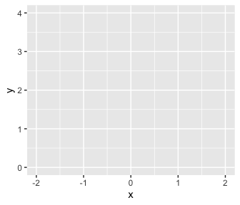
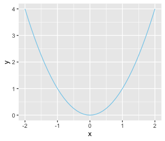

3 The R Programming Language
The material in this chapter is rather dull reading because it basically amounts to a list (although a carefully scaffolded list) of basic commands in R along with illustrative examples. After reading the first few pages and nodding off, you may be tempted to skip ahead, and I wouldn’t blame you. But much of the material in this chapter is crucial, and all of it will eventually be useful, so you should at least skim it all so you know where to return when the topics arise later. (p. 35)
Most, but not all, of this part of my project will mirror what’s in the text. However, I do add tidyverse-oriented content, such as a small walk through of plotting in ggplot2.
3.1 Get the software
In addition to R and RStudio, I make use of a variety of R packages in this project. You can get the heaviest hitters by executing this code block.
install.packages("devtools")
install.packages("tidyverse", dependencies = T)
install.packages("brms", dependencies = T)
install.packages("tidybayes", dependencies = T)3.1.1 A look at RStudio.
The R programming language comes with its own basic user interface that is adequate for modest applications. But larger applications become unwieldy in the basic R user interface, and therefore it helps to install a more sophisticated R-friendly editor. There are a number of useful editors available, many of which are free, and they are constantly evolving. At the time of this writing, I recommend RStudio, which can be obtained from http://www.rstudio.com/ (p. 35).
I completely agree. R programing is easier with RStudio.
3.2 A simple example of R in action
Basic arithmetic is straightforward in R.
## [1] 5Algebra is simple, too.
## [1] 4Behold Figure 3.1.
library(tidyverse)
d <-
tibble(x = seq(from = -2, to = 2, by = .1)) %>%
mutate(y = x^2)
ggplot(data = d,
aes(x = x, y = y)) +
geom_line(color = "skyblue") +
theme(panel.grid = element_blank())
If you’re new to the tidyverse and/or making figures with ggplot2, it’s worthwhile to walk that code out. With the first line, library(tidyverse), we opened up the core packages within the tidyverse, which are:
- ggplot2,
- dplyr,
- tidyr,
- readr,
- purrr,
- tibble,
- stringr, and
- forcats.
With the next block
we made our tibble. In R, data frames are one of the primary types of data objects (see subsection 3.4.4., below). We’ll make extensive use of data frames in this project. Tibbles are a particular type of data frame, which you might learn more about here. With those first two lines, we determined what the name of our tibble would be, d, and made the first column, x.
Note the %>% operator at the end of the second line. In prose, we call that the pipe. As explained in chapter 5 of R4DS, “a good way to pronounce %>% when reading code is ‘then.’” So in words, the those first two lines indicate “Make an object, d, which is a tibble with a variable, x, defined by the seq() function, then…”
In the portion after then (i.e., the %>%), we changed d. The mutate() function let us add another variable, y, which is a function of our first variable, x.
With the next 4 lines of code, we made our plot. When plotting with ggplot2, the first line is always with the ggplot() function. This is where you typically tell ggplot2 what data object you’re using–which must be a data frame or tibble–and what variables you want on your axes. The interesting thing about ggplot2 is that the code is modular. So if we only coded the ggplot() portion, we’d get:

Although ggplot2 knows which variables to put on which axes, it has no idea how we’d like to express the data. The result is an empty coordinate system. The next line of code is the main event. With geom_line() we told ggplot2 to connect the data points with a line. With the color argument, we made that line skyblue. [Here’s a great list of the named colors available in ggplot2.] Also, notice the + operator at the end of the ggplot() function. With ggplot2, you add functions by placing the + operator on the right of the end of one function, which will then append the next function.

Personally, I’m not a fan of gridlines. They occasionally have their place and I do use them from time to time. But on the while, I prefer to omit them from my plots. The final theme() function allowed me to do so.
ggplot(data = d,
aes(x = x, y = y)) +
geom_line(color = "skyblue") +
theme(panel.grid = element_blank())
Chapter 3 of R4DS is a great introduction to plotting with ggplot2. If you want to dive deeper, see the references at the bottom of this page.
3.2.1 Get the programs used with this book.
This subtitle has a double meaning, here. Yes, you should probably get Kruschke’s scripts from the book’s website. You may have noticed this already, but unlike in Kruschke’s text, I will usually show all my code. Indeed, the purpose of my project is to make coding these kinds of models and visualizations easier. But if you’re ever curious, you can always find my script files in their naked form, here.
Later in this subsection, Kruschke mentioned working directories. If you don’t know what your current working directory is, just execute getwd(). I’ll have more to say on this topic later on when I make my pitch for RStudio projects.
3.3 Basic commands and operators in R
In addition to the resource link Kruschke provided in the text, Grolemund and Wickham’s R4DS is an excellent general introduction to the kinds of R functions you’ll want to succeed with your data analysis. Other than that, I’ve learned the most when I had a specific data problem to solve and then sought out the specific code/techniques required to solve it. If already have your own data or can get your hands on some sexy data, learn these techniques by playing around with them. This isn’t the time to worry about rigor, preregistration, or all of that. This is time to play.
3.3.1 Getting help in R.
As with plot() you can learn more about the ggplot() function with ?.
help.start() can be nice, too.
??geom_line() can help us learn more about the geom_line() function.
3.3.2 Arithmetic and logical operators.
With arithmetic, the order of operations is: power first, then multiplication, then addition.
## [1] 19With parentheses, you can force addition before multiplication.
## [1] 27Operations inside parentheses get done before power operations.
## [1] 49One can nest parentheses.
## [1] 81We can use R to perform a variety of logical tests, such as negation.
## [1] FALSEWe can do conjunction.
## [1] FALSEAnd we can do disjunction.
## [1] TRUEConjunction has precedence over disjunction.
## [1] TRUEHowever, with parentheses we can force disjunction first.
## [1] FALSE3.3.3 Assignment, relational operators, and tests of equality.
In contrast to Kruschke’s preference, I will use the arrow operator, <-, to assign values to named variables.
Yep, this ain’t normal math.
## [1] 1## [1] 2Here we use == to test for equality.
## [1] 2## [1] TRUEUsing !=, we can check whether the value of x is NOT equal to 3.
## [1] TRUEWe can use < to check whether the value of x is less than 3.
## [1] TRUESimilarly, we can use > to check whether the value of x is greater than 3.
## [1] FALSEThis normal use of the <- operator
is not the same as
## [1] FALSEThe limited precision of a computer’s memory can lead to odd results.
Although mathematically TRUE, this is FALSE for limited precision.
## [1] FALSEHowever, they are equal up to the precision of a computer.
## [1] TRUE3.4 Variable types
If you’d like to learn more about the differences among vectors, matrices, lists, data frames and so on, you might check out Roger Peng’s R Programming for Data Science, chapter 4.
3.4.1 Vector.
3.4.1.1 The combine function.
The combine function is c().
## [1] 2.718 3.140 1.414You’ll note the equivalence.
## [1] TRUE TRUE TRUEThis leads to the next subsection.
3.4.1.2 Component-by-component vector operations.
We can multiply two vectors, component by component.
## [1] 7 12 15If you have a sole number, a scaler, you can multiply an entire vector by it like:
## [1] 2 4 6which is a more compact way to perform this.
## [1] 2 4 6The same sensibilities hold for other operations, such as addition.
## [1] 3 4 53.4.1.3 The colon operator and sequence function.
The colon operator has precedence over addition.
## [1] 5 6 7 8Parentheses override default precedence.
## [1] 5 6The power operator has precedence over the colon operator.
## [1] 1 2 3 4 5 6 7 8 9And parentheses override default precedence.
## [1] 1 4 9The seq() function is quite handy. If you don’t specify the length of the output, it will figure that out the logical consequence of the other arguments.
## [1] 0.0 0.5 1.0 1.5 2.0 2.5 3.0This sequence won’t exceed to = 3.
## [1] 0.0000 0.5001 1.0002 1.5003 2.0004 2.5005In each of the following examples, we’ll omit one of the core seq() arguments: from, to, by, and length.out. Here we do not define the end point.
## [1] 0.0 0.5 1.0 1.5 2.0 2.5 3.0This time we fail to define the increment.
## [1] 0.0 0.5 1.0 1.5 2.0 2.5 3.0And this time we omit a starting point.
## [1] 0.0 0.5 1.0 1.5 2.0 2.5 3.03.4.1.4 The replicate function.
We’ll define our pre-replication vector with the <- operator.
With times, we repeat the vector as a unit.
## [1] "A" "B" "C" "A" "B" "C"But if we mix times with c(), we can repeat individual components of abc differently.
## [1] "A" "A" "A" "A" "B" "B" "C"With the each argument, we repeat the individual components of abc one at a time.
## [1] "A" "A" "B" "B" "C" "C"And you can even combine each and length, repeating each element until the length requirement has been fulfilled.
## [1] "A" "A" "B" "B" "C" "C" "A" "A" "B" "B"You can also combine each and times.
## [1] "A" "A" "B" "B" "C" "C" "A" "A" "B" "B" "C" "C" "A" "A" "B" "B" "C"
## [18] "C"I tend to do things like the above as two separate steps. One way to do so is by nesting one rep() function within another.
## [1] "A" "A" "B" "B" "C" "C" "A" "A" "B" "B" "C" "C" "A" "A" "B" "B" "C"
## [18] "C"As Kruschke points out, this can look confusing.
## [1] "A" "A" "A" "B" "B" "B" "B" "C" "C" "C" "C" "C"But breaking the results up into two steps might be easier to understand,
## [1] "A" "A" "A" "B" "B" "B" "B" "C" "C" "C" "C" "C"And especially earlier in my R career, it helped quite a bit to break operation sequences like this up by saving and assessing the intermediary steps.
## [1] "A" "A" "B" "B" "C" "C"## [1] "A" "A" "A" "B" "B" "B" "B" "C" "C" "C" "C" "C"3.4.1.5 Getting at elements of a vector.
Behold our exemplar vector, x.
The straightforward way to extract the second and fourth elements is
## [1] 3.14 47405.00Or you might use reverse logic and omit the first and third elements.
## [1] 3.14 47405.00It’s handy to know that T is a stand in for TRUE and F is a stand in for FALSE. You’ll probably notice I tend to use the abbreviations most of the time.
## [1] 3.14 47405.00The names() function makes it easy to name the components of a vector.
## e pi sqrt2 zipcode
## 2.718 3.140 1.414 47405.000Now we can call the components with their names.
## pi zipcode
## 3.14 47405.00Here’s Kruschke’s review:
# define a vector
x <- c(2.718, 3.14, 1.414, 47405)
# name the components
names(x) <- c("e", "pi", "sqrt2", "zipcode")
# you can indicate which elements you'd like to include
x[c(2, 4)]## pi zipcode
## 3.14 47405.00## pi zipcode
## 3.14 47405.00## pi zipcode
## 3.14 47405.00## pi zipcode
## 3.14 47405.003.4.2 Factor.
Here are our five-person SES status data.
## [1] "high" "medium" "low" "high" "medium"The factor() function turns them into a factor, which will return the levels when called.
## [1] high medium low high medium
## Levels: high low mediumHere are the factor levels as numerals.
## [1] 1 3 2 1 3With the levels and ordered arguments, we can order the factor elements.
## [1] high medium low high medium
## Levels: low < medium < highNow “high” is a larger integer.
## [1] 3 2 1 3 2We’ve already specified xf.
## [1] high medium low high medium
## Levels: high low mediumAnd we know how it’s been coded numerically.
## [1] 1 3 2 1 3We can have levels and labels.
xfol <- factor(x,
levels = c("low", "medium", "high"), ordered = T,
labels = c("Bottom SES", "Middle SES", "Top SES"))
xfol## [1] Top SES Middle SES Bottom SES Top SES Middle SES
## Levels: Bottom SES < Middle SES < Top SES3.4.3 Matrix and array.
Kruschke uses these more often than I do. I’m more of a vector and data frame kinda guy. Even so, here’s an example of a matrix.
## [,1] [,2] [,3]
## [1,] 1 3 5
## [2,] 2 4 6We can get the same thing using nrow.
## [,1] [,2] [,3]
## [1,] 1 3 5
## [2,] 2 4 6Note how the numbers got ordered by rows within each column? We can specify them to be ordered across columns, first.
## [,1] [,2] [,3]
## [1,] 1 2 3
## [2,] 4 5 6We can name the dimensions. I’m not completely consistent, but I’ve been moving in the direction of following The Tidyverse Style Guide for naming my R objects and their elements. From the guide, we read
Variable and function names should use only lowercase letters, numbers, and
_. Use underscores (_) (so called snake case) to separate words within a name.
By those sensibilities, we’ll name our rows and columns as
matrix(1:6,
nrow = 2,
dimnames = list(TheRowDimName = c("row_1_name", "row_2_name"),
TheColDimName = c("col_1_name", "col_2_name", "col_3_name")))## TheColDimName
## TheRowDimName col_1_name col_2_name col_3_name
## row_1_name 1 3 5
## row_2_name 2 4 6You’ve also probably noticed that I “always put a space after a comma, never before, just like in regular English,” as well as “put a space before and after = when naming arguments in function calls.” IMO, this makes code easier to read. You do you.
We’ll name our matrix x.
x <-
matrix(1:6,
nrow = 2,
dimnames = list(TheRowDimName = c("row_1_name", "row_2_name"),
TheColDimName = c("col_1_name", "col_2_name", "col_3_name")))Since there are 2 dimensions, we’ll subset with two dimensions. Numerical indices work.
## [1] 6Row and column names work, too. Just make sure to use quotation marks, "", for those.
## [1] 6Here we specify the range of columns to include.
## col_1_name col_2_name col_3_name
## 2 4 6Leaving that argument blank returns them all.
## col_1_name col_2_name col_3_name
## 2 4 6And leaving the row index blank returns all row values within the specified column(s).
## row_1_name row_2_name
## 5 6Mind your commas! This produces the second row, returned as a vector.
## col_1_name col_2_name col_3_name
## 2 4 6This returns both rows of the 2nd column.
## row_1_name row_2_name
## 3 4Leaving out the comma will return the numbered element.
## [1] 2It’ll be important in your brms career to have a sense of 3-dimensional arrays. Several brms convenience functions often return them (e.g., ranef() in multilevel models).
a <- array(1:24, dim = c(3, 4, 2), # 3 rows, 4 columns, 2 layers
dimnames = list(RowDimName = c("r1", "r2", "r3"),
ColDimName = c("c1", "c2", "c3", "c4"),
LayDimName = c("l1", "l2")))
a## , , LayDimName = l1
##
## ColDimName
## RowDimName c1 c2 c3 c4
## r1 1 4 7 10
## r2 2 5 8 11
## r3 3 6 9 12
##
## , , LayDimName = l2
##
## ColDimName
## RowDimName c1 c2 c3 c4
## r1 13 16 19 22
## r2 14 17 20 23
## r3 15 18 21 24Since these have 3 dimensions, you have to use 3-dimensional indexing. As with 2-dimensional objects, leaving the indices for a dimension blank will return all elements within that dimension. For example, this code returns all columns of r3 and l2, as a vector.
## c1 c2 c3 c4
## 15 18 21 24And this code returns all layers of r3 and c4, as a vector.
## l1 l2
## 12 243.4.4 List and data frame.
Here’s my_list.
## $a
## [1] 1 2 3
##
## $b
## [,1] [,2] [,3]
## [1,] 1 3 5
## [2,] 2 4 6
##
## $c
## [1] "Hello, world."To return the contents of the a portion of my_list, just execute this.
## [1] 1 2 3We can index further within a.
## [1] 2To return the contents of the first item in our list with the double bracket, [[]], do:
## [1] 1 2 3You can index further to return only the second element of the first list item.
## [1] 2But double brackets, [][], are no good, here.
## $<NA>
## NULLTo learn more, Jenny Bryan has a great talk discussing the role of lists within data wrangling. But here’s a data frame.
## integers number_names
## 1 1 one
## 2 2 two
## 3 3 threeWith data frames, we can continue indexing with the $ operator.
## [1] one two three
## Levels: one three twoWe can also use the double bracket.
## [1] one two three
## Levels: one three twoNotice how the single bracket with no comma indexes columns rather than rows.
## number_names
## 1 one
## 2 two
## 3 threeBut adding the comma returns the factor-level information when indexing columns.
## [1] one two three
## Levels: one three twoIt works a touch differently when indexing by row.
## integers number_names
## 2 2 twoLet’s try with a tibble, instead.
## # A tibble: 3 x 2
## integers number_names
## <int> <chr>
## 1 1 one
## 2 2 two
## 3 3 threeOne difference is that tibbles default to assigning text columns as character strings rather than factors. Another difference occurs when printing large data frames versus large tibbles. Tibbles yield more compact glimpses. For more, check out R4DS Chapter 10.
It’s also worthwhile pointing out that within the tidyverse, you can pull out a specific column with the select() function. Here we select number_names.
## # A tibble: 3 x 1
## number_names
## <chr>
## 1 one
## 2 two
## 3 threeGo here learn more about select().
3.5 Loading and saving data
3.5.1 The read.csv read_csv() and read.table read_table() functions.
Although read.csv() is the default CSV reader in R, the read_csv() function from the readr package (i.e., one of the core tidyverse packages) is a new alternative. In comparison to base R’s read.csv(), readr::read_csv() is faster and returns tibbles (as opposed to data frames with read.csv()). The same general points hold for base R’s read.table() versus readr::read_table().
Using Kruschke’s HGN.csv example, we’d load the CSV with read_csv() like this:
Note again that read_csv() defaults to returning columns with character information as characters, not factors.
## [1] "black" "brown" "blond" "black" "black" "red" "brown"See? As a character variable, Hair no longer has factor level information. But if you knew you wanted to treat Hair as a factor, you could easily convert it with dplyr::mutate().
## [1] black brown blond black black red brown
## Levels: black blond brown redAnd here’s a tidyverse way to reorder the levels for the Hair factor.
## [1] black brown blond black black red brown
## Levels: red blond brown black## [1] 4 3 2 4 4 1 3Since we imported hgn with read_csv(), the Name column is already a character vector, which we can verify with the str() function.
## chr [1:7] "Alex" "Betty" "Carla" "Diane" "Edward" "Frank" "Gabrielle"Note how using as.vector() did nothing in our case. Name was already a character vector.
## chr [1:7] "Alex" "Betty" "Carla" "Diane" "Edward" "Frank" "Gabrielle"The Group column was imported as composed of integers.
## num [1:7] 1 1 1 2 2 2 2Switching Group to a factor is easy enough.
## [1] 1 1 1 2 2 2 2
## Levels: 1 23.5.2 Saving data from R.
Yeah you guessed, readr has a write_csv() function, too. The arguments are as follows: write_csv(x, path, na = "NA", append = FALSE, col_names = !append). Saving hgn in your working directory is as easy as:
You could also use save().
Once we start fitting Bayesian models, this method will be an important way to save the results of those models.
The load() function is simple.
The ls() function works very much the same way as the more verbosely-named objects() function.
## [1] "a" "abc" "d" "hgn" "my_list" "step_1" "t"
## [8] "x" "xf" "xfo" "xfol" "y"3.6 Some utility functions
# this is a more compact way to replicate 100 1's, 200 2's, and 300 3's
x <- rep(1:3, times = c(100, 200, 300))
summary(x)## Min. 1st Qu. Median Mean 3rd Qu. Max.
## 1.000 2.000 2.500 2.333 3.000 3.000We can use the pipe to convert and then summarize x.
## 1 2 3
## 100 200 300head() and tail() are quite useful.
## [1] 1 1 1 1 1 1## [1] 3 3 3 3 3 3Within the tidyverse, the slice() function serves a similar role. In order to use slice(), we’ll want to convert x, which is just a vector of integers, into a data frame. Then we’ll use slice() to return a subset of the rows.
## Warning: Calling `as_tibble()` on a vector is discouraged, because the behavior is likely to change in the future. Use `tibble::enframe(name = NULL)` instead.
## This warning is displayed once per session.## # A tibble: 6 x 1
## value
## <int>
## 1 1
## 2 1
## 3 1
## 4 1
## 5 1
## 6 1So that was analogous to what we accomplished with head(). Here’s the analogue to tail().
## # A tibble: 6 x 1
## value
## <int>
## 1 3
## 2 3
## 3 3
## 4 3
## 5 3
## 6 3The downside of that code was we had to do the math to determine that \(600 - 6 = 595\) in order to get the last six rows, as returned by tail(). A more general approach is to use n(), which will return the total number of rows in the tibble.
## # A tibble: 7 x 1
## value
## <int>
## 1 3
## 2 3
## 3 3
## 4 3
## 5 3
## 6 3
## 7 3To unpack (n() - 6):n(), because n() = 600, (n() - 6) = 600 - 6 = 595. Therefore (n() - 6):n() was equivalent to having coded 595:600. Instead of having to do the math ourselves, n() did it for us. It’s often easier to just go with head() or tail(). But the advantage of this more general approach is that it allows one take more complicated slices of the data, such as returning the first three and last three rows.
## # A tibble: 7 x 1
## value
## <int>
## 1 1
## 2 1
## 3 1
## 4 3
## 5 3
## 6 3
## 7 3We’ve already used the handy str() function a bit. It’s also nice to know that tidyverse::glimpse() performs a similar function.
## Classes 'tbl_df', 'tbl' and 'data.frame': 600 obs. of 1 variable:
## $ value: int 1 1 1 1 1 1 1 1 1 1 ...## Observations: 600
## Variables: 1
## $ value <int> 1, 1, 1, 1, 1, 1, 1, 1, 1, 1, 1, 1, 1, 1, 1, 1, 1, 1, 1, 1…Within the tidyverse, we’d use group_by() and then summarize() as alternatives to the aggregate() function. With group_by() we group the observations first by Hair and then by Gender within Hair. After that, we summarize the groups by taking the median() values of their Number.
## # A tibble: 5 x 3
## # Groups: Hair [4]
## Hair Gender median
## <fct> <chr> <dbl>
## 1 red M 7
## 2 blond F 3
## 3 brown F 7
## 4 black F 7
## 5 black M 1.5One of the nice things about this workflow is that the code reads somewhat like how we’d explain what we were doing. We, in effect, told R to Take hgn, then group the data by Hair and Gender within Hair, and then summarize() those groups by their median() Number values. There’s also the nice quality that we don’t have to continually tell R where the data are coming from the way the aggregate() function required Kruschke to prefix each of his variables with HGNdf$. We also didn’t have to explicitly rename the output columns the way Kruschke had to.
I’m not aware that our group_by() %>% summarize() workflow has a formula format the way aggregate() does.
To count how many levels we had in a grouping factor, we’d use the n() function in summarize().
## # A tibble: 5 x 3
## # Groups: Hair [4]
## Hair Gender n
## <fct> <chr> <int>
## 1 red M 1
## 2 blond F 1
## 3 brown F 2
## 4 black F 1
## 5 black M 2Alternatively, we could switch out the summary(n = n()) line with count().
## # A tibble: 5 x 3
## # Groups: Hair, Gender [5]
## Hair Gender n
## <fct> <chr> <int>
## 1 red M 1
## 2 blond F 1
## 3 brown F 2
## 4 black F 1
## 5 black M 2We could then use spread() to convert that output to a format similar to Kruschke’s table of counts.
## # A tibble: 2 x 5
## # Groups: Gender [2]
## Gender red blond brown black
## <chr> <int> <int> <int> <int>
## 1 F NA 1 2 1
## 2 M 1 NA NA 2With this method, the NAs are stand-ins for 0s.
## , , LayDimName = l1
##
## ColDimName
## RowDimName c1 c2 c3 c4
## r1 1 4 7 10
## r2 2 5 8 11
## r3 3 6 9 12
##
## , , LayDimName = l2
##
## ColDimName
## RowDimName c1 c2 c3 c4
## r1 13 16 19 22
## r2 14 17 20 23
## r3 15 18 21 24apply() is part of a family of functions that offer a wide array of uses. You can learn more about the apply() family here or here.
## LayDimName
## ColDimName l1 l2
## c1 6 42
## c2 15 51
## c3 24 60
## c4 33 69Here’s a.
## , , LayDimName = l1
##
## ColDimName
## RowDimName c1 c2 c3 c4
## r1 1 4 7 10
## r2 2 5 8 11
## r3 3 6 9 12
##
## , , LayDimName = l2
##
## ColDimName
## RowDimName c1 c2 c3 c4
## r1 13 16 19 22
## r2 14 17 20 23
## r3 15 18 21 24The reshape2 package is a precursor to the tidyr package (i.e., one of the core tidyverse packages). The reshape2::melt() function is a quick way to transform the 3-dimensional a matrix into a tidy data frame.
## RowDimName ColDimName LayDimName value
## 1 r1 c1 l1 1
## 2 r2 c1 l1 2
## 3 r3 c1 l1 3
## 4 r1 c2 l1 4
## 5 r2 c2 l1 5
## 6 r3 c2 l1 6
## 7 r1 c3 l1 7
## 8 r2 c3 l1 8
## 9 r3 c3 l1 9
## 10 r1 c4 l1 10
## 11 r2 c4 l1 11
## 12 r3 c4 l1 12
## 13 r1 c1 l2 13
## 14 r2 c1 l2 14
## 15 r3 c1 l2 15
## 16 r1 c2 l2 16
## 17 r2 c2 l2 17
## 18 r3 c2 l2 18
## 19 r1 c3 l2 19
## 20 r2 c3 l2 20
## 21 r3 c3 l2 21
## 22 r1 c4 l2 22
## 23 r2 c4 l2 23
## 24 r3 c4 l2 24We have an alternative if you wanted to stay within the tidyverse. To my knowledge, the fastest way to make the transformation is to first use as.tbl_cube() and follow that up with as_tibble(). The as.tbl_cube() function will convert the a matrix into a tbl_cube. We will use the met_name argument to determine the name of the measure assessed in the data. Since the default is for as.tbl_cube() to name the measure name as ., it seemed value was a more descriptive choice. We’ll then use the as_tibble() function to convert our tbl_cube object into a tidy tibble.
## # A tibble: 24 x 4
## RowDimName ColDimName LayDimName value
## <chr> <chr> <chr> <int>
## 1 r1 c1 l1 1
## 2 r2 c1 l1 2
## 3 r3 c1 l1 3
## 4 r1 c2 l1 4
## 5 r2 c2 l1 5
## 6 r3 c2 l1 6
## 7 r1 c3 l1 7
## 8 r2 c3 l1 8
## 9 r3 c3 l1 9
## 10 r1 c4 l1 10
## # … with 14 more rowsNotice how the first three columns are returned as characters instead of factors. If you really wanted those to be factors, you could always follow up the code with mutate_if(is.character, as.factor).
3.7 Programming in R
It’s worthy to note that this project was done with R Markdown, which is an alternative to an R script. As Grolemund and Wickham point out
R Markdown integrates a number of R packages and external tools. This means that help is, by-and-large, not available through ?. Instead, as you work through this chapter, and use R Markdown in the future, keep these resources close to hand:
R Markdown Cheat Sheet: Help > Cheatsheets > R Markdown Cheat Sheet,
R Markdown Reference Guide: Help > Cheatsheets > R Markdown Reference Guide.
Both cheatsheets are also available at http://rstudio.com/cheatsheets.
I also strongly recommend checking out R Notebooks, which is a kind of R Markdown document but with a few bells a whistles that make it more useful for working scientists. You can learn more about it here and here. And for a more comprehensive overview, check out Xie, Allaire, and Grolemund’s R Markdown: The Definitive Guide.
3.7.1 Variable names in R.
Kruschke prefers to use camelBack notation for his variable and function names. Though I initially hated it, I’ve been moving in the direction of snake_case. It seems easier to read_prose_in_snake_case than it is to readProseInCamelBack. To each their own.
3.7.2 Running a program.
See R4DS Chapter 8 for a nice overview on working directories within the context of an RStudio project.
3.7.3 Programming a function.
Here’s our simple a_sq_plus_b function.
If you explicitly denote your arguments, everything works fine.
## [1] 11Keep things explicit and you can switch up the order of the arguments.
## [1] 11But here’s what happens when you are less explicit.
## [1] 11## [1] 7Since we gave b a default value, we can be really lazy.
## [1] 5But we can’t be lazy with a. This
yielded this warning on my computer: “Error in a_sq_plus_b(b = 1) : argument”a" is missing, with no default".
If we’re completely lazy, a_sq_plus_b() presumes our sole input value is for the a argument and it uses the default value of 1 for b.
## [1] 5The lesson is important because it’s good practice to familiarize yourself with the defaults of the functions you use in statistics and data analysis, more generally.
3.7.4 Conditions and loops.
Here’s our starting point for if() and else().
if(x <= 3){ # if x is less than or equal to 3
show("small") # display the word "small"
} else { # otherwise
show("big") # display the word "big"
} # end of ’else’ clause## Warning in if (x <= 3) {: the condition has length > 1 and only the first
## element will be used## [1] "small"Yep, this is no good.
On my computer, it returned this message: “the condition has length > 1 and only the first element will be used[1]”small" Error: unexpected ‘else’ in “else”".
Here we use the loop.
## [1] 5
## [1] 4
## [1] 3
## [1] 2
## [1] 1## [1] "do"
## [1] "re"
## [1] "mi"It’s also useful to understand how to use the ifelse() function within the context of a data frame. Recall hos x is a data frame.
## # A tibble: 5 x 1
## x
## <int>
## 1 1
## 2 2
## 3 3
## 4 4
## 5 5We can use the mutate() function to make a new variable, size, which is itself a function of the original variable, x. We’ll use the ifelse() function to return “small” if x <= 3, but to return “big” otherwise.
## # A tibble: 5 x 2
## x size
## <int> <chr>
## 1 1 small
## 2 2 small
## 3 3 small
## 4 4 big
## 5 5 bigYou should also know there’s a dplyr alternative, called if_else(). It works quite similarily, but is stricter about type consistency. If you ever get into a situation where you need to do many ifelse() statements or a many-layered ifelse() statement, you might check out dplyr::case_when().
3.7.5 Measuring processing time.
This will be nontrivial to consider in your Bayesian career. Here’s the loop.
start_time <- proc.time()
y <- vector(mode = "numeric", length = 1.0E6)
for (i in 1:1.0E6) {y[i] <- log(i)}
stop_time <- proc.time()
elapsed_time_loop <- stop_time - start_time
show(elapsed_time_loop)## user system elapsed
## 0.096 0.006 0.106Now we use a vector.
start_time <- proc.time()
y <- log(1:1.0E6)
stop_time <- proc.time()
elapsed_time_vector <- stop_time - start_time
show(elapsed_time_vector)## user system elapsed
## 0.019 0.007 0.027Here we compare the two times.
## user.self
## 0.1979167For my computer, the vectorized approach took about 19.8% the time the loop approach did. When using R, avoid loops for vectorized approaches whenever possible.
As an alternative, when I’m doing analyses like these, I tend to just use Sys.time().
I’m not going to walk them out, here. But as we go along, you might notice I sometimes use functions from the purrr::map() family in places where Kruschke used loops. I think they’re pretty great.
3.7.6 Debugging.
This should be no surprise, by now, but in addition to Kruschke’s good advice, I also recommend checking out R4DS. I reference it often.
3.8 Graphical plots: Opening and saving
For making and saving plots with ggplot2, I recommend reviewing R4DS Chapters 3 and 28.
Session info
## R version 3.6.0 (2019-04-26)
## Platform: x86_64-apple-darwin15.6.0 (64-bit)
## Running under: macOS High Sierra 10.13.6
##
## Matrix products: default
## BLAS: /Library/Frameworks/R.framework/Versions/3.6/Resources/lib/libRblas.0.dylib
## LAPACK: /Library/Frameworks/R.framework/Versions/3.6/Resources/lib/libRlapack.dylib
##
## locale:
## [1] en_US.UTF-8/en_US.UTF-8/en_US.UTF-8/C/en_US.UTF-8/en_US.UTF-8
##
## attached base packages:
## [1] stats graphics grDevices utils datasets methods base
##
## other attached packages:
## [1] forcats_0.4.0 stringr_1.4.0 dplyr_0.8.3 purrr_0.3.3
## [5] readr_1.3.1 tidyr_1.0.0 tibble_2.1.3 ggplot2_3.2.1
## [9] tidyverse_1.2.1
##
## loaded via a namespace (and not attached):
## [1] tidyselect_0.2.5 xfun_0.10 reshape2_1.4.3 haven_2.1.0
## [5] lattice_0.20-38 colorspace_1.4-1 vctrs_0.2.0 generics_0.0.2
## [9] htmltools_0.4.0 yaml_2.2.0 utf8_1.1.4 rlang_0.4.1
## [13] pillar_1.4.2 glue_1.3.1.9000 withr_2.1.2 modelr_0.1.4
## [17] readxl_1.3.1 plyr_1.8.4 lifecycle_0.1.0 munsell_0.5.0
## [21] gtable_0.3.0 cellranger_1.1.0 rvest_0.3.4 evaluate_0.14
## [25] labeling_0.3 knitr_1.23 fansi_0.4.0 broom_0.5.2
## [29] Rcpp_1.0.2 scales_1.0.0 backports_1.1.5 jsonlite_1.6
## [33] hms_0.4.2 digest_0.6.21 stringi_1.4.3 grid_3.6.0
## [37] cli_1.1.0 tools_3.6.0 magrittr_1.5 lazyeval_0.2.2
## [41] crayon_1.3.4 pkgconfig_2.0.3 zeallot_0.1.0 xml2_1.2.0
## [45] lubridate_1.7.4 assertthat_0.2.1 rmarkdown_1.13 httr_1.4.0
## [49] rstudioapi_0.10 R6_2.4.0 nlme_3.1-139 compiler_3.6.0